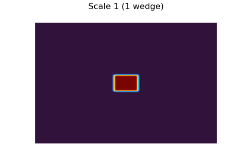
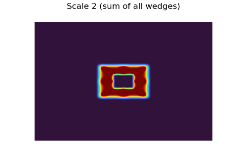
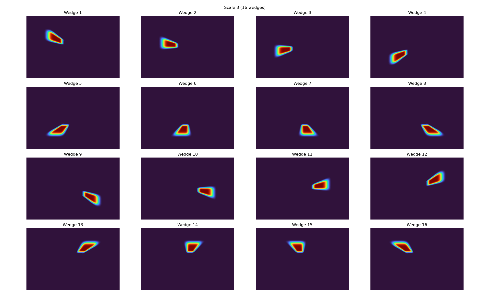
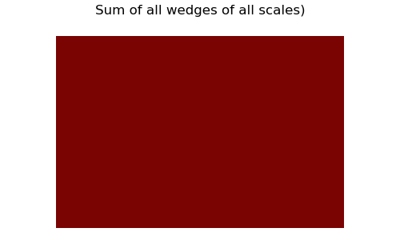

Note
Go to the end to download the full example code
4. Curvelet Coefficients in the FK domain#
This example shows the regions in the FK domain where each curvelet coefficient occupies.
# sphinx_gallery_thumbnail_number = 5
import matplotlib as mpl
import matplotlib.pyplot as plt
import numpy as np
from curvelops import FDCT2D
Setup#
nbscales = 4
nbangles_coarse = 8
allcurvelets = False
empty_fdct = Cop @ data_empty
# Convert to a curvelet struct indexed by
# [scale, wedge (angle), z, x]
empty_fdct_struct = Cop.struct(empty_fdct)
def create_dirac_wedge(Cop, scale, wedge):
d = np.zeros(Cop.dims)
wedge_only_fdct = Cop @ d
wedge_only_fdct_struct = Cop.struct(wedge_only_fdct)
normalization = np.sqrt(wedge_only_fdct_struct[scale][wedge].size)
iz, ix = wedge_only_fdct_struct[scale][wedge].shape
wedge_only_fdct_struct[scale][wedge][iz // 2, ix // 2] = normalization
wedge_only_fdct = Cop.vect(wedge_only_fdct_struct)
wedge_only = Cop.H @ wedge_only_fdct
return wedge_only
Plot Wedges of each Scale#
Colormap to be used in all plots below
fig, ax = plt.subplots(figsize=(6, 1))
col_map = plt.get_cmap("turbo")
mpl.colorbar.ColorbarBase(
ax,
cmap=col_map,
orientation="horizontal",
norm=mpl.colors.Normalize(vmin=0, vmax=1),
)
fig.tight_layout()
wedge_fk_abs = np.zeros_like(data_empty)
for j, fdct_scale in enumerate(empty_fdct_struct, start=1):
rows = int(np.floor(np.sqrt(len(fdct_scale))))
fig, axes = plt.subplots(
int(np.ceil(len(fdct_scale) / rows)),
rows,
figsize=(5 * rows, 3 * rows),
)
fig.suptitle(
f"Scale {j} ({len(fdct_scale)} wedge{'s' if len(fdct_scale) > 1 else ''})"
)
axes = np.atleast_1d(axes).ravel()
wedge_scale_fk_abs = np.zeros_like(data_empty)
for iw, (fdct_wedge, ax) in enumerate(zip(fdct_scale, axes), start=1):
dirac_wedge = create_dirac_wedge(Cop, j - 1, iw - 1)
dirac_wedge_fk = np.fft.fftshift(
np.fft.fft2(np.fft.ifftshift(dirac_wedge), norm="ortho")
)
wedge_scale_fk_abs += np.abs(dirac_wedge_fk)
ax.imshow(np.abs(dirac_wedge_fk).T, cmap="turbo", vmin=0, vmax=1)
if len(fdct_scale) > 1:
ax.set(title=f"Wedge {iw}")
ax.axis("off")
fig.tight_layout()
wedge_fk_abs += wedge_scale_fk_abs
if len(fdct_scale) > 1:
fig, ax = plt.subplots(figsize=(5, 3))
fig.suptitle(f"Scale {j} (sum of all wedges)")
ax.imshow(wedge_scale_fk_abs.T, cmap="turbo", vmin=0, vmax=1)
ax.axis("off")
fig.tight_layout()
fig, ax = plt.subplots(figsize=(5, 3))
fig.suptitle("Sum of all wedges of all scales)")
ax.imshow(wedge_fk_abs.T, cmap="turbo", vmin=0, vmax=1)
ax.axis("off")
fig.tight_layout()
- 
- 
- 
- 
Plot Dirac in Space domain#
dirac_all_fdct_struct = Cop.struct(empty_fdct.copy())
for fdct_scale in dirac_all_fdct_struct:
for fdct_wedge in fdct_scale:
normalization = np.sqrt(fdct_wedge.size)
iz, ix = fdct_wedge.shape
fdct_wedge[iz // 2, ix // 2] = normalization * (1 + 1j)
fdct_wedge[iz // 2 + 1, ix // 2] = normalization * (1 + 1j)
fdct_wedge[iz // 2, ix // 2 + 1] = normalization * (1 + 1j)
fdct_wedge[iz // 2 + 1, ix // 2 + 1] = normalization * (1 + 1j)
data_dirac = Cop.H @ Cop.vect(dirac_all_fdct_struct)
data_dirac = (data_dirac.real + data_dirac.imag) / np.sqrt(2)
vmax = 0.5 * np.sqrt(data_dirac.size)
fig, ax = plt.subplots(figsize=(5, 3))
ax.imshow(data_dirac.T, cmap="gray", vmin=-vmax, vmax=vmax)
ax.set(
xlim=(nx // 2 - 30, nx // 2 + 30),
ylim=(nz // 2 + 30, nz // 2 - 30),
title="Space domain magnified",
)
fig.tight_layout()
Total running time of the script: ( 0 minutes 5.321 seconds)